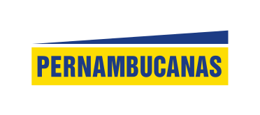
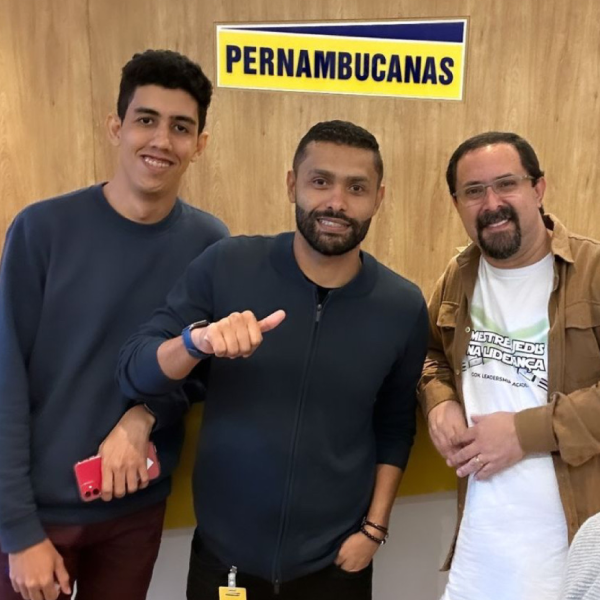
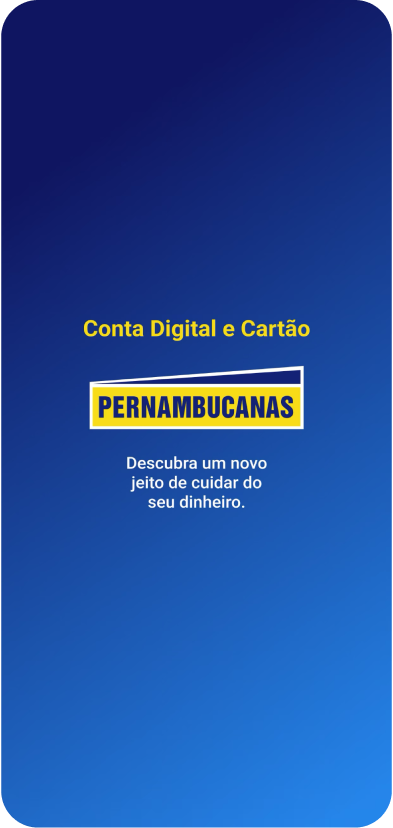
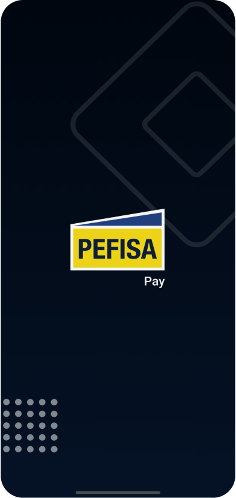
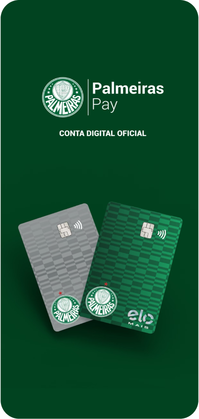
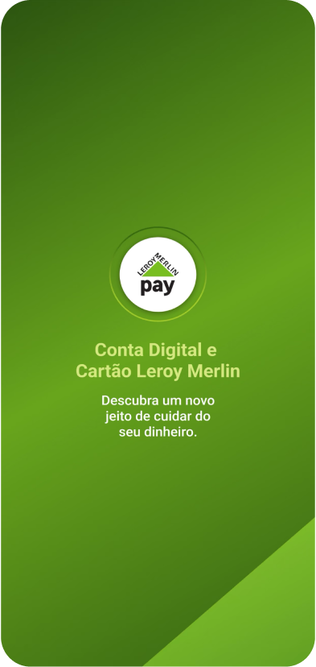

Escalando Design para Habilitar um Ecossistema Phygital

Pernambucanas é uma das maiores redes varejistas do Brasil, reconhecida como empresa phygital por integrar de forma fluida lojas físicas com experiências digitais. Com forte presença no varejo e em serviços financeiros, a empresa tem evoluído seu ecossistema para oferecer soluções mais conectadas, eficientes e centradas no usuário.
Contexto
Entrei na Pernambucanas em um momento inicial de maturidade em UX, quando o design ainda estava emergindo como disciplina dentro da organização. Com o tempo, evoluí para o cargo de Design Coordinator, liderando uma equipe de 12 designers em múltiplas unidades de negócio e desempenhando papel central na transformação digital da empresa.
Acompanhei a transição da evangelização do design para a habilitação estratégica, ajudando a estruturar times, processos e formas de trabalho para suportar um ecossistema de produto crescente e complexo.
Minha jornada refletiu a evolução de uma empresa que transformou o design de uma função operacional em um motor estratégico de entrega de valor para o cliente.

O principal desafio foi escalar o design em um ambiente fragmentado e complexo.
O ecossistema era composto por múltiplas Unidades de Negócio com regras, tecnologias e sistemas distintos. Como resultado:
- Falta de consistência entre produtos e jornadas
- Experiências desconectadas entre canais físicos e digitais
- Necessidade de acelerar entregas sem comprometer a qualidade
O objetivo era transformar essa complexidade em um ecossistema de experiência coeso, escalável e centrado no usuário.
O processo de design foi refinado em uma estrutura adaptável para suportar diferentes contextos de negócio, com foco em clareza, autonomia e alinhamento.
Kickoff
Alinhamento com stakeholders para definição de objetivos, expectativas e escopo de cada iniciativa nas BUs.
Discovery
Entrevistas internas e pesquisa para mapear regras de negócio, fluxos existentes e oportunidades de melhoria.
Prototipagem
Planejamento de fluxos e prototipagem colaborativa com times de produto, engenharia e negócio.
Validação
Testes de usabilidade com usuários reais para validar hipóteses e refinar fluxos antes da entrega.
Iteração
Ciclos contínuos de refinamento e alinhamento com metas de negócio, acompanhando a implementação e evolução dos produtos.
Pernambucanas Pay

Pefisa Pay

Palmeiras Pay

Leroy Merlin Pay

Atuei como líder estratégico na Pernambucanas em um momento crítico de transformação: o design precisava deixar de ser uma função de execução e passar a ser um motor de decisões — capaz de conectar múltiplas unidades de negócio em torno de uma experiência coerente e escalável.
A fragmentação do ecossistema revelou um problema estrutural: cada Business Unit operava com suas próprias regras, tecnologias e processos de design — o que gerava inconsistências visíveis na jornada do cliente e atritava a capacidade de entrega dos times.
Para resolver isso, organizei a atuação em três pilares estratégicos:
- Estrutura de times — construção e escalonamento de squads de design em 6+ BUs, com papéis complementares e cultura de produto.
- Processo e operações — implementação de um fluxo de design adaptável que harmonizou diferentes contextos sem perder velocidade de entrega.
- Sistema de experiência — evolução do Design System como camada de consistência entre digital e físico, padronizando sem engessar.
A criação da primeira conta digital da Pernambucanas foi um marco estratégico: exigiu integração entre varejo, financeiro e tecnologia, com design como fio condutor entre as jornadas. Liderei o processo do início ao fim — da definição de escopo à validação com usuários reais.
Paralelamente, estruturei a liderança de design como função de habilitação: 1:1s, planos de carreira, mentoria e rituais de alinhamento que fortaleceram a autonomia dos times e a cultura de design na organização.
O resultado foi a transformação da complexidade em vantagem competitiva — com um ecossistema phygital mais coeso, times mais maduros e uma experiência omnichannel capaz de conectar canais físicos e digitais em torno da jornada do cliente.
A atuação estratégica em design resultou em marcos concretos de transformação digital, fortalecendo o ecossistema phygital da Pernambucanas e expandindo sua presença em serviços financeiros.
6+ BUs
unidades de negócio alinhadas, com times de design estruturados, processos escaláveis e entrega consistente
1º
conta digital lançada na história da Pernambucanas, expandindo o ecossistema financeiro e habilitando banking digital
Omni
experiência omnichannel integrada via Design System unificado, conectando canais físicos e digitais na jornada do cliente